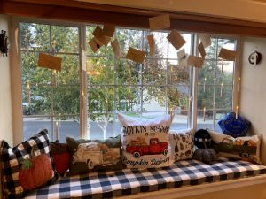

I am not an outdoorsy person, but I do love to be in our garden watching the various plants cycle through their seasons. I am a Harry Potter fan, I loved the books and movies, however, I wouldn’t say that I’m obsessed. I just enjoy the fantasy of it and the way the franchise has managed to continue to captivate generations. You can find a little bit of Hogwarts at my house at Halloween though! My family is also really keen on exploring traditions and cultures outside of our own and we do that exploration through food.